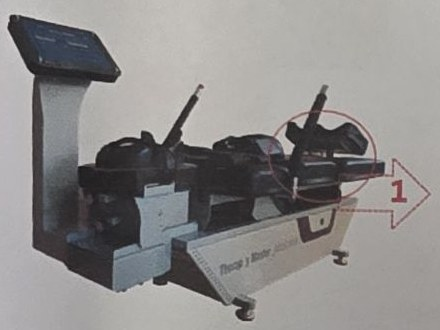
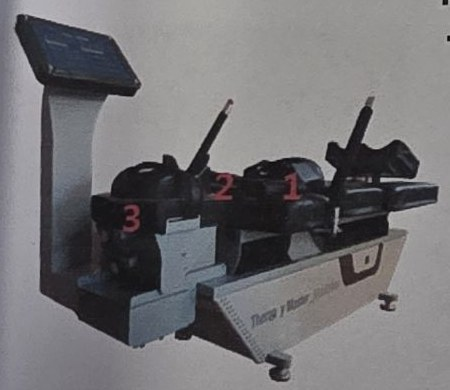
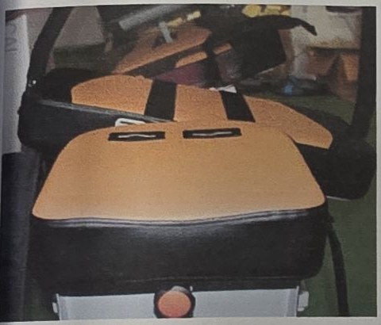
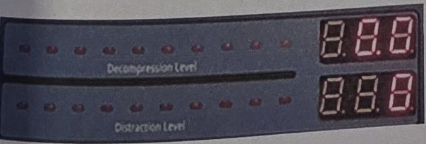
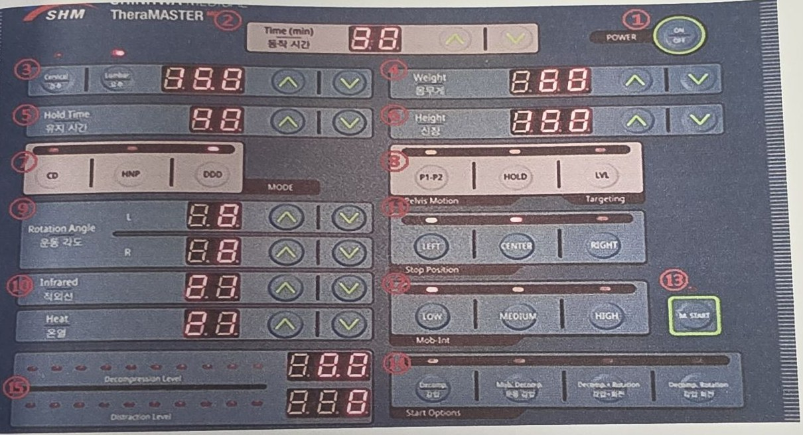

1בדיקות לפני שימוש
- הבינו היטב את אופן השימוש באמצעות מדריך המשתמש.
- בדקו שהמוצר תקין וללא פגם.
- התקינו במקום בטוח שבו הרצפה ישרה (אופקית).
- התקינו במקום יבש, ללא לחות ומאוורר היטב.
- ודאו שכל הכבלים מחוברים היטב.
- הדליקו את החשמל.
- הדליקו את הבקר (Controller).
2עליית המטופל למכשיר
- היזהרו מנפילה בעת עלייה למכשיר או ירידה ממנו.
- בגדים רפויים, תכשיטים או שיער ארוך עלולים להיתפס ברווחים שבמכשיר – יש להיזהר.
- אין להשתמש במכשיר עבור מטופלים במשקל 135 ק"ג ומעלה.
- על המפעיל לוודא שהמטופל מבין היטב את אופן השימוש במתג החירום של המטופל.

- סובבו את ידית הכיוון של המטופל עד הסוף בכיוון 1 והעלו את המטופל למכשיר.
הטמפרטורה המרבית של המושב היא 40°C, שנחשבת בטוחה יחסית. טמפרטורת משטח רגילה בדרך כלל אינה גורמת לכוויה.

- קבעו את אגן המטופל.
- קבעו את חזה המטופל.
- קבעו את ראש המטופל.
3כיוון זוויות – Unilateral (חד-צדדי)
Unilateral – Lumbar (מותני)
- לשימוש בכל כאב או כאב מקרין בצד אחד.
- משכו את הידית וכוונו לזווית מתאימה שאינה גורמת כאב למטופל.
- בדקו את הזווית ותעדו אותה בתיק המטופל.
- ניתן לכוון ימינה או שמאלה ב-30, 45, 60 מ"מ, בהתאם למיקום הפגיעה.
Unilateral – Cervical (צווארי)
- לשימוש בכל כאב או כאב מקרין בצד אחד.
- משכו את הידית וכוונו לזווית מתאימה שאינה גורמת כאב למטופל.
- בדקו את הזווית ותעדו אותה בתיק המטופל.
- ניתן לכוון ימינה או שמאלה ב-20, 40, 60, 80 מ"מ, בהתאם למיקום הפגיעה.
- משכו את הידית והרימו את המסגרת כלפי מעלה לזווית המתאימה. מקטע ההתחלה הוא
C1-3, וכל דרגה נוספת בהתאמה:C2~4,C3~5,C4~5,C5~7,C6~T1.
4בחירת זווית מוביליזציה

כיוון זוויות עליון ותחתון
- לשימוש בכל כאב או כאב מקרין בצד אחד.
- הזווית המרבית לחלק העליון היא 8°, ולחלק התחתון 18° לכל צד (ימין ושמאל). ניתן לקבוע זווית רצויה לכל מטופל.
- רמת המוביליזציה נקבעת בלחצנים LOW / MEDIUM / HIGH.
- זווית המוביליזציה נקבעת ב-Rotation Angle (L / R) בעזרת החיצים. ברירת המחדל היא 8° ימין ושמאל, אך ניתן להחיל 0°–18° בהתאם לטווח התנועה של המטופל.
5הזנת נתונים בסיסיים
| # | לחצן | פעולה |
|---|---|---|
| ① | Time (min) | הזנת זמן הטיפול בעזרת לחצני החיצים ▲▼. |
| ② | Weight | הזנת משקל המטופל בעזרת לחצני החיצים. |
| ③ | Height | הזנת גובה המטופל בעזרת לחצני החיצים. |
| ④ | Heat | הזנת טמפרטורת המזרן בעזרת לחצני החיצים. |
| ⑤ | POWER ON/OFF | הפעלה / כיבוי. |
| ⑥ | M.START | הפעלה ידנית (Manual Start). |
6שימוש כמכשיר לתיקון אורתופדי
(A) Level – LVL
- לדקומפרסיה מותנית – בחרו את זווית מקטע הפגיעה.
- לחיצה אחת מציגה מספר המייצג זווית פגיעה מסוימת.
- בחרו את זווית הפגיעה הרצויה.
| ערך | מקטע | ערך | מקטע |
|---|---|---|---|
| 0 | L5~S1 | 15 | L2~5 |
| 5 | L4~S1 | 20 | L1~4 |
| 10 | L3~5 | 25 | T12~L3 |
(B) Pelvis – P1-P2
בחרו 1, 2 או P.
1 – תיקון אגן כל 5 שניות.
2 – תיקון אגן כל 10 שניות.
(C) Pelvis & Sacrum – HOLD
מחזיק את הלחץ על האגן והעצה (Sacrum) למשך הזמן שנקבע.
(D) Stop Position – LEFT CENTER RIGHT
- בחרו את מיקום העצירה הרצוי.
- לתיקון דקומפרסיה – בחרו Cervical או Lumbar, הזינו ערך כוח (Force) ולאחר מכן בחרו HNP או DDD. לתיקון סיבובי – בחרו את הצד שאינו כואב לטיפול.
7שימוש כמכשיר תנועה ומתיחה
(A) Rotation Setup – הגדרת סיבוב
- ניתן לכוון ביחידות של 2° ולהחיל כל טווח תנועה רצוי. לאחר מכן הזינו את הזווית ב-Stop Position.
- רמת הסיבוב נקבעת ב-LOW / MEDIUM / HIGH, וניתן להחיל זאת גם על Decomp. rotation.
(A) Decomp. Correction set – מתיחה (Traction)
- בחרו Cervical או Lumbar (הזנת המשקל מבצעת אוטומטית הזנה בק"ג).
- פרמטרים להזנה: Force (כוח), Hold Time (זמן החזקה), Rest time (זמן מנוחה) ו-Tx model. תיקון דקומפרסיה מתבצע כאשר מצב Tx אינו OFF.
- בחרו רציף – CD (Continuous) או לסירוגין – HNP / DDD (Intermittent).
- במהלך תיקון דקומפרסיה ניתן להשתמש בפונקציה החד-צדדית הידנית ובפונקציית הסיבוב בכיוון שאינו כואב, בהתאם למיקום הכאב.
Infrared radiator – מקרן אינפרא-אדום
- כוונו את הטמפרטורה בלחצני החיצים ▲▼.
- כבו כשאין בו שימוש (כמו בחימום העליון).
8הפעלת תוכנית אוטומטית
לחצני Start Options. בכל התוכניות: לחיצה אחת – התחלה, לחיצה שנייה – עצירה. התוכנית פועלת לאורך הזמן שהוגדר.
1) Decompression – דקומפרסיה
הפעלה ← בחירת Cervical / Lumbar ← הגדרת זמן ← הגדרת משקל וגובה ← לחיצה על Decomp.
2) Mobilization decompression
(מוביליזציה, דקומפרסיה, מוביליזציה)
הפעלה ← Cervical / Lumbar ← זמן ← משקל וגובה ← זווית תנועה ← לחיצה על Mob. Decomp.
3) Decompression + Rotation
(דקומפרסיה ולאחר מכן סיבוב דקומפרסיה)
הפעלה ← Cervical / Lumbar ← זמן ← משקל וגובה ← זווית תנועה ← לחיצה על Decomp.+Rotation
4) Decompression rotation
(הסיבוב מתבצע עם כוח המתיחה המופעל)
הפעלה ← Cervical / Lumbar ← זמן ← משקל וגובה ← זווית תנועה ← לחיצה על Decomp. Rotation
תצוגת כוח ו-מ"מ בזמן אמת

- ערך הכוח (Force) מוצג בזמן אמת.
- ההתארכות (Elongation, מ"מ) מוצגת בזמן אמת.
9לוח הבקרה – Quick Manual

- 1POWER ON/OFF – הפעלה וכיבוי
- 2Time (min) – זמן טיפול
- 3Cervical / Lumbar – בחירת צוואר / מותן, ותצוגת כוח
- 4Weight – משקל המטופל
- 5Hold Time – זמן החזקה
- 6Height – גובה המטופל
- 7CD HNP DDD – מצב (MODE)
- 8P1-P2 HOLD LVL – תנועת אגן / מיקוד
- 9Rotation Angle L/R – זווית תנועה
- 10Infrared / Heat – אינפרא-אדום וחימום
- 11LEFT CENTER RIGHT – מיקום עצירה
- 12LOW MEDIUM HIGH – עוצמת מוביליזציה (Mob-Int)
- 13M.START – הפעלה ידנית
- 14Start Options – 4 התוכניות האוטומטיות
- 15Decompression Level / Distraction Level – תצוגת כוח ומ"מ בזמן אמת
הגדרה בסיסית (Common)
- הפעילו את המכשיר ובחרו Cervical או Lumbar ③.
- הזינו משקל ④ – ערך הכוח נקבע אוטומטית ל-1/4 ממשקל המטופל במותני ול-1/20 ממשקל המטופל בצווארי.
- בחרו CD או HNP או DDD ⑦.
- הזינו גובה ⑥ (תתבצע התאמה).
- במותני – בחרו LVL ⑧ (בצווארי – ידית ידנית).
- לאחר הגדרת סעיפים 1–5, לחצו ⑭ על תוכנית 1 – הדקומפרסיה תתחיל.
Motion decomp. (Motion decomp., Decomp.+Rotation, Decomp. rotation) – ברירת מחדל 8° ימין/שמאל
- הגדירו את סעיפים 1–5 שלעיל.
- קבעו את זווית התנועה ⑨ (בדקו את טווח התנועה של המטופל, ואז החילו 0°–18° ימין/שמאל).
- ⑭ בחרו 2 – Motion decomp., 3 – Decomp.+Rotation, או 4 – Decomp. rotation.
10אחסון, תחזוקה וסילוק
- לאחר השימוש – כבו ונתקו את התקע מהשקע.
- אין לאחסן בטמפרטורה ולחות גבוהות.
- אל תאפשרו לנוזלים, כולל מים, לחדור למוצר.
- היזהרו שלא להפעיל מכה חזקה על המכשיר.
- בעת ניקוי – נגבו אבק במטלית רכה; לניקוי החלק החיצוני הוסיפו מעט מי סבון למטלית הרכה.
סילוק ציוד רפואי ישן
(חל באיחוד האירופי ובמדינות אירופיות אחרות עם מערכת איסוף נפרדת.) הסמל על המוצר או על אריזתו מציין שאין לטפל במוצר כפסולת ביתית, אלא למסור אותו לנקודת האיסוף המתאימה למיחזור ציוד רפואי. סילוק נכון עוזר למנוע השלכות שליליות אפשריות על הסביבה ועל בריאות האדם, ומיחזור החומרים מסייע בשימור משאבי טבע. למידע נוסף פנו לרשות המקומית, לשירות פינוי הפסולת או לחנות שבה נרכש המוצר.